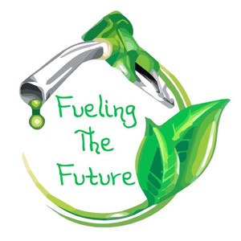

The world’s 750 million motor vehicles emit well over 900 million metric tonnes of carbon dioxide each year. Traffic-related air pollution has been responsible for 6% of deaths per year and is associated with certain forms of leukaemia, inflammatory lung diseases, increased cardio-vascular disease, low birth-weight babies and male infertility. It stands to reason that tackling traffic- related air pollution should be high on any government’s list of priorities. Thus, in an attempt to minimise this situation many governments around the world have been looking at ways to implement alternative fuel sources. The most widely accepted way of doing this is to replace the crude oil that our vehicles currently run on with renewable, ‘environmentally friendly’ One serious contender put forward as a solution to the pollution problem is ethanol.
Ethanol is a type of alcohol made by fermenting plant material. Water and organic matter from the plants including com, sorghum, sugar cane and wood are mixed together and fermented to make ethanol. After fermentation there are three layers remaining. The first is water and small particles of grain and alcohol. It takes on a syrup consistency. The second layer is the remaining grain, which is 17 per cent dry matter. The third layer is the actual ethanol – a colourless, volatile, flammable liquid. It is the only layer sold and accounts for exactly one-third of the total dry matter used for its production. There are three primary ways that it is used as a fuel for transportation: as a blend of 10 per cent ethanol with 90% unleaded fuel (E10); as a component of reformulated gasoline and; as a primary fuel with 85 parts of ethanol blended with 15 parts of unleaded fuel (E-85). In the 1800s in the USA, it was first used as lamp fuel. Later on, due to skyrocketing oil prices in the 1970s, E10 was produced as a type of ‘fuel-extender’ for vehicles with E-85 being produced in the 1990s. Brazil has also used ethanol-blended fuels. Like America, the high prices in the 1970s prompted a government mandate to produce vehicles which could be fuelled by pure ethanol Today there are more than 4,2 million ethanol- powered vehicles in Brazil (40 per cent passenger carrying) which consume 4 billion gallons of ethanol annually. Today, Brazil is the largest transportation ethanol fuel market in the world.
Given that Ethanol is made from a variety of plant substances when it is used in fuel production, it increases the monetary value of feed grains grown by farmers. In fact, in the USA, the largest ethanol consuming nation in the world, ethanol production adds £4.5 billion to the farm economy every year. According to the United States Department of Agriculture, ethanol production adds 30 cents to the value of a bushel of corn. Another of its benefits, according to Brian Keating, deputy chief of Australia’s Commonwealth Scientific and Industrial Research Organisation (CSIRO) is that a 10% ethanol blend (E10) would reduce greenhouse gas emissions by 2 to 5% over the full lifecycle of ethanol production and consumption. Said Keating, “The precise benefits depend on specific factors in the production cycle. An important component of which is the energy source used by the ethanol factory. If it’s being powered by coal or oil, there are obviously associated greenhouse gas emissions.” In America, The Clean Air Act of 1990 and the National Energy Policy Act of 1992 have both created new market opportunities for cleaner, more efficient fuels with many state governments in America’s Mid-west purchasing fleet vehicles capable of running on E-85 fuels.
Although it makes a good fuel, some drawbacks have been documented. The economics of ethanol production are improving as the technology improves but ethanol has two problems: It does not explode like gasoline, and it can absorb water, which can cause oxidation, rust and corrosion. The claims of possible damage to vehicles from the use of ethanol blends above 10% has therefore attracted considerable negative publicity. Compared to diesel – the standard fuel in the heavy moving industry – ethanol is known to have a lower energy content so ethanol trucks require larger fuel tanks to achieve the same range as a diesel-powered vehicle. In Australia, a government review’ into the impacts of a 20% ethanol blend on vehicles found the information to be insufficient or conflicting, but did identify a number of problems such as the possible perishing and swelling of elastomeric and plastic materials in fuel systems. Stakeholders in the motor vehicle industry have slated that warranties on motor vehicles and pump dispensing equipment could be at risk with the use of blends above 10% ethanol. Principle economist for the Australian Bureau of Agriculture Andrew Dickson points out that the money sugarcane growers get for their cane is not determined by the domestic consumption or domestic demand for ethanol, it is entirely determined by the world sugar market and the world trade in molasses He believes that the only way the sugar industry’ can benefit from the existence of an ethanol industry is if they invest in the ethanol industry. “The sugar producer does not get any more money for their molasses so what incentive do they have to produce any more?.” The cost of production also represents some challenges. In Australia, fuel ethanol costs around 70 cents per litre compared with around 35 cents per litre for unleaded petrol. In America, one report revealed that even with government assistance, ethanol is dose to 35 per cent more than the price of diesel. Consequently, production of ethanol requires government assistance to be competitive. A recent study by the Australian Bureau of Agricultural and Resource Economies found that without assistance, large-scale production of ethanol would not be commercially viable in Australia.
Regardless of whether the Australian sugar industry will benefit from a mandated 10% ethanol mix, the expansion of ethanol production would certainly lead to increased economic activity in farming areas. It is inevitable that some expansion would be at the expense of existing industry. If ethanol becomes more popular, there will soon be more plants producing it. This means there will be a need for workers for the plants. The American National Ethanol Vehicle Coalition (NBVC) projects that employment will be boosted by 200,000 jobs and the balance of trade will be improved by over $2 The future of ethanol looks promising, for better or worse ethanol looks to be a serious contender for tomorrow’s fuel.